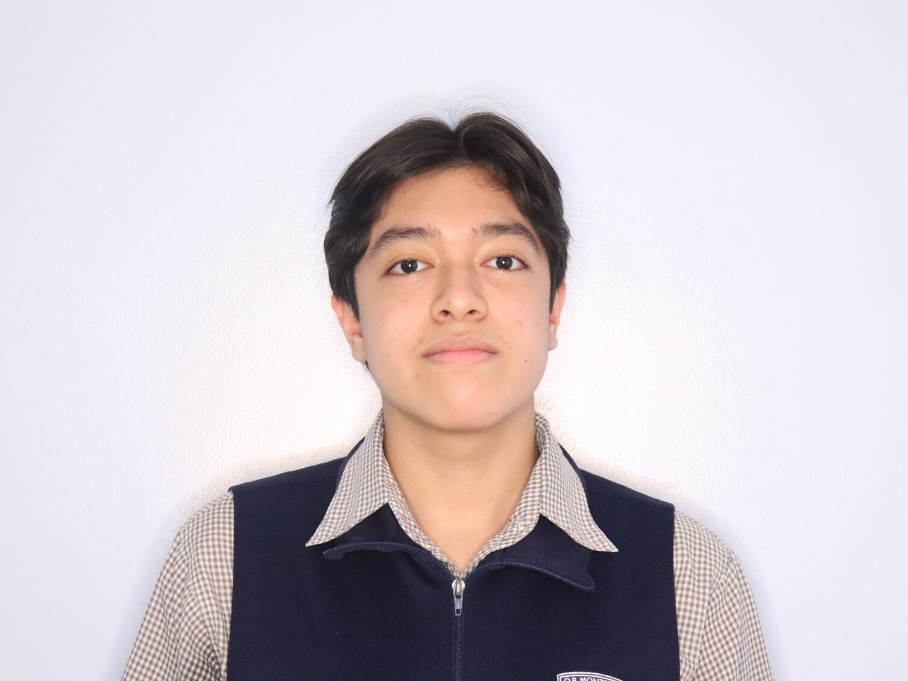

PERSONAL PROFILE // NC-2077

I like watching movies, playing video games, and reading books.
I want to live my life without regrets.
"Every thing that you love, you will eventually lose, but in the end, love will return in a different form." - Franz Kafka